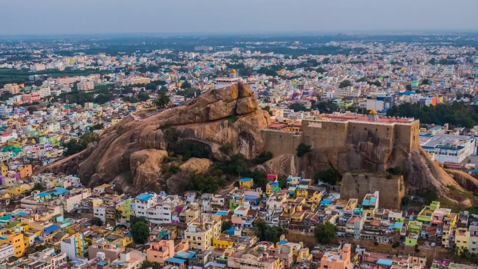

Tiruchirappalli
Tiruchirappalli (also known as Trichy) is a major city in Tamil Nadu, India, known for its history,
culture, and
educational institutions. It's located on the banks of the Cauvery River, famous for the first
man-made dam, Kallanai.
The city is also known for the Rock Fort, a historical landmark, and is a major hub for road and
rail travel.
Tiruchirappalli is a significant educational center, housing multiple prestigious institutions.
1. History:
Tiruchirappalli has a rich history dating back to the 3rd century BC, under the Chola rule, and has
been ruled by
various dynasties, including the Pallavas, Pandyas, and the British.
2. Geography:
Situated on the banks of the Cauvery River, the city's geographical location has been a significant
factor in its
development and history.
3. Rock Fort:
The 85-meter tall Rock Fort is a prominent landmark and a major tourist attraction, offering
historical and
architectural significance.
4. Educational Institutions:
Tiruchirappalli is a major educational hub, home to institutions like NIT Trichy, IIM Trichy, and
IIIT.
5. Major Transportation Hub:
The city is a major road and railway hub, with Tiruchirappalli International Airport connecting it
to various
destinations in India and beyond.